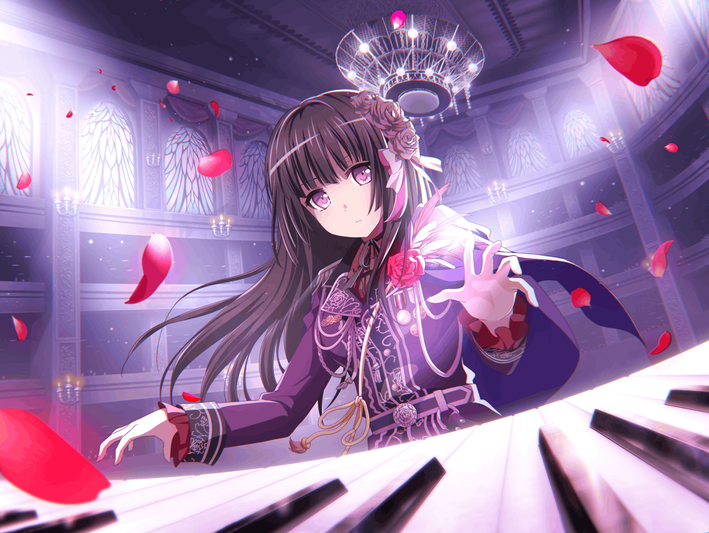

燐子
……ここから……始まったんだよね……
燐子
みんな……上手だし……
燐子
わたし……上手く……できてるのかな……
燐子
……これじゃあ……ダメ……だよね
燐子
もっと……自分に……自信を持たないと……
燐子
つ……次のライブ……までに……
燐子
……………………
燐子
き……緊張して……
息苦し、くっ……
燐子
はぁ……
燐子
…………
燐子
わたし……大丈夫……かな……
燐子
……！？
燐子
だ……誰……？
燐子
あ……{{userName}}さん……
こ……こんにちは……
燐子
{{userName}}さん……どこに行っていたんですか……？
燐子
あ……買い出しに行って……たんですか……
お、お疲れさま……です
燐子
わ……わたし……ですか……？
燐子
わたしは……す……少し……
燐子
昔のことを……お……思い出していました……
燐子
だ、だから……
燐子
む……胸を押さえているのは……
ど、どこか痛むとかじゃ……
……ない、んです……
燐子
ご……ご心配をおかけして……
すみま、せん……
燐子
……
燐子
{{userName}}……さん
燐子
わ、わたしは……
Roseliaで……
う、上手くできている……でしょうか？
燐子
ふ……不安なんです……
わたし以外、は……
みんな……上手ですから……
燐子
え……？
わ、わたしも上手……ですか……？
燐子
ちゃんと……できてる……？
そ、そうですか……
燐子
{{userName}}さんに……
そう言って……もらえると……
少しだけ……安心します……
燐子
……もっと自分に……
自信を持たなきゃって……
思っては……いるんです……
燐子
で、でも……
どうしても……不安で……
燐子
…………
燐子
……え？
さっき……思い出していた……っていう……
昔のことを……聞きたい……？
燐子
えっと……き……聞いても……
面白く……ないと、思います……よ？
燐子
そ……それでもいいなら……
……わかりました
燐子
こ……この……ライブハウスは……
わ、わたしにとって……思い出の場所……なんです……
燐子
どういうことか……ですか？
燐子
わたし……昔、カフェで……
燐子
あこちゃんに……友希那さんのライブに……
さ……誘われたんです……
燐子
……わ、わたし……人が多いところとか……
好きじゃなくて……
燐子
……ほら……ライブハウスって……
人が多い……じゃ、ないですか……
燐子
はい……
だから……最初は……断ろうと……思ったんですけど……
燐子
あこちゃんに……ど、どうしても恩返しをしたいって……
押し切られてしまって……
燐子
け、結局……
ライブハウスに、行くことに……
燐子
そ……その時のライブが……本当にすごくて……
燐子
あこちゃんが……友希那さんのバンドに入りたいって言って……
そ……そして、それが……わたしの人生も……変えたんです……
燐子
……あの時の音楽を聴いて、
友希那さん達と……バンドを組んだあこちゃん……
燐子
その……あこちゃんが入ったバンドの……演奏を聴いて……
わ、わたしも……Roseliaに入りたいって……思ったんです……
燐子
そ……その思いは……時間と一緒に大きくなって……
燐子
き、気づいた時には……こ、行動に……移して……いたんです……
燐子
あこちゃんは……
い……今まで引っ込み思案だった……わたしが……
燐子
じ、自分の想いを……叶えたいって……行動したことに……
驚いて……いました……
燐子
だ……だから……こんな風に……
燐子
わ、わたしが……
{{userName}}さん……と……お話、できているのも……
燐子
す……少しだけ……
わたしが……変わる事ができた……のも……
燐子
ぜ……全部……
あこちゃんと……この、ライブハウスに……来たことが……
始まりなん……です
燐子
あ、あの時……
あこちゃんに連れて来て……もらったから……
燐子
今の……わたしが……
い……いるん……です……
燐子
…………
しゃ、喋り……過ぎちゃいましたね……
燐子
そ……そんな、に……笑顔で……見つめられると……
は……恥ずかしい…………です……
燐子
……そ……それじゃあ……
わ、わたし……ライブリハーサルの……
じゅ、準備を……してきます……ね……
燐子
さよう、なら……
また……後で……